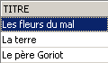
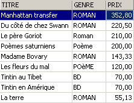
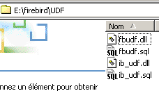

4. As expressões da linguagem SQL
4.1. Introduction
Na maioria dos comandos SQL, é possível utilizar uma expressão. Tomemos, por exemplo, o comando SELECT:
SELECT expr1, expr2, ... de table WHERE expression |
SELECT seleciona as linhas para as quais expression é verdadeiro e apresenta, para cada uma delas, os valores de expri.
Exemplos
Neste parágrafo, propomos explicar o conceito de expressão. Uma expressão elementar é do tipo:
operando1 opérateur operando2
ou
função(parâmetros)
Exemplo
Na expressão , GENRE = 'ROMAN'
- GENRE é o operando 1
- «ROMAN» é o operando 2
- = é o operador
Na expressão upper(genre)
- «upper» é uma função
- «tipo» é um parâmetro dessa função.
Vamos abordar, em primeiro lugar, as expressões com operadores e, em seguida, apresentaremos as funções disponíveis no Firebird.
4.2. Expressões com operadores
Classificaremos as expressões com operadores de acordo com o tipo dos seus operandos:
- numéricas
- cadeia de caracteres
- data
- booleano ou lógico
4.2.1. Expressões com operandos de tipo numérico
4.2.1.1. Lista de operadores
Sejam nombre1, nombre2, nombre3 uns números. Os operadores que podem ser utilizados são os seguintes:
Operadores relacionais
: número1 é maior que número2 | |
: número1 maior ou igual a número2 | |
: número1 menor que número2 | |
: número1 menor ou igual a número2 | |
: número1 é igual a número2 | |
: número1 diferente de número2 | |
: o mesmo | |
: número1 está no intervalo [nombre2,nombre3] | |
: o número 1 pertence à lista de números | |
: o número1 não tem valor | |
: número1 tem um valor |
Operadores aritméticos
: adição | |
: subtração | |
: multiplicação | |
: divisão |
4.2.1.2. Operadores relacionais
Uma expressão relacional expressa uma relação que é verdadeira ou falsa. O resultado de tal expressão é, portanto, um valor booleano ou lógico.
Exemplos:


4.2.1.3. Operadores aritméticos
A expressão aritmética é-nos familiar. Expressa um cálculo a realizar entre dados numéricos. Já nos deparámos com expressões deste tipo: supõe-se que o preço registado nos registos do ficheiro BIBLIO seja um preço sem impostos. Pretendemos visualizar cada título com o seu preço TTC para uma taxa de TVA de 18,6%:
Se os preços tiverem de aumentar 3%, o comando será
É possível encontrar vários operadores aritméticos numa expressão, além de funções e parênteses. Estes elementos são tratados de acordo com prioridades diferentes:
1 | <---- prioridade mais elevada | |
2 | ||
3 | ||
4 | <---- menor prioridade |
Quando dois operadores com a mesma prioridade estão presentes na expressão, é aquele que se encontra mais à esquerda na expressão que é avaliado em primeiro lugar.
Exemplos
A expressão PRIX*TAUX+TAXES será avaliada como (PRIX*TAUX)+TAXES. Com efeito, é o operador de multiplicação que será utilizado em primeiro lugar. A expressão PRIX*TAUX/100 será avaliada como (PRIX*TAUX)/100.
4.2.2. Expressões com operandos do tipo caractere
4.2.2.1. Lista de operadores
Os operadores que podem ser utilizados são os seguintes:
Sejam cadeia1, cadeia2, cadeia3, modelo das cadeias de caracteres
: cadeia1 é maior do que cadeia2 | |
: a cadeia1 é maior ou igual à cadeia2 | |
: a cadeia1 é menor que a cadeia2 | |
: cadeia1 menor ou igual a cadeia2 | |
: a cadeia1 é igual à cadeia2 | |
: a cadeia1 é diferente da cadeia2 | |
: o mesmo | |
: cadeia1 dentro do intervalo [chaine2,chaine3] | |
: a cadeia1 pertence à lista de cadeias | |
: a cadeia1 não tem valor | |
: a cadeia1 tem um valor | |
: string1 corresponde ao modelo |
Operador de concatenação
cadeia1 || cadeia2 : chaine2 concatenada com chaine1
4.2.2.2. Operadores relacionais
O que significa comparar cadeias de caracteres com operadores como <, <=, etc.?
Cada carácter é codificado por um número inteiro. Quando se comparam dois caracteres, são os seus códigos inteiros que são comparados. A codificação adotada respeita a ordem natural do dicionário:
Os números vêm antes das letras e as maiúsculas antes das minúsculas.
4.2.2.3. Comparação de duas cadeias de caracteres
Considere a relação «CHAT» < «CHIEN». Será verdadeira ou falsa? Para efetuar esta comparação, o SGBD compara as duas cadeias de caracteres, um por um, com base nos seus códigos inteiros. Assim que se detectam dois caracteres diferentes, a cadeia a que pertence o menor dos dois é considerada menor do que a outra cadeia. No nosso exemplo, «CHAT» é comparada com «CHIEN». Obtêm-se os seguintes resultados sucessivos:
Após esta última comparação, a cadeia «CHAT» é considerada menor do que a cadeia «CHIEN». A relação «CHAT» < «CHIEN» é, portanto, verdadeira.
Vamos agora comparar «CHAT» e «chat».
Após esta comparação, a relação «CHAT» < «chat» é declarada verdadeira.
Exemplos


4.2.2.4. O operador LIKE
O operador LIKE é utilizado da seguinte forma: chaîne LIKE modèle
A relação é verdadeira se chaîne corresponder a modèle. Este último é uma cadeia de caracteres que pode conter dois caracteres curinga:
que designa qualquer sequência de caracteres | |
que designa 1 carácter qualquer |
Exemplos


4.2.2.5. O operador de concatenação

4.2.3. Expressões com operandos do tipo data
Sejam data1, data2 e data3 algumas datas. Os operadores que podem ser utilizados são os seguintes:
Operadores relacionais
é verdadeira se data1 for anterior a data2 | |
é verdadeira se data1 for anterior ou igual a data2 | |
é verdadeira se a data1 for posterior à data2 | |
é verdadeira se a data1 for posterior ou igual à data2 | |
é verdadeira se a data1 e a data2 forem idênticas | |
é verdadeira se a data1 e a data2 forem diferentes. | |
idem | |
é verdadeira se a data1 estiver entre a data2 e a data3 | |
é verdadeira se data1 constar na lista de datas | |
é verdadeira se data1 não tiver valor | |
é verdadeira se data1 tiver um valor | |
é verdadeira se date1 corresponder ao modelo | |
Operadores aritméticos
: número de dias que separam a data1 da data2 | |
: data2 tal que data1 - data2 = número | |
: data2 tal que data2 - data1 = número |
Exemplos


Qual é a idade dos livros da biblioteca?

4.2.4. Expressões com operandos booleanos
Recorde-se que um valor booleano ou lógico tem dois valores possíveis: verdadeiro ou falso. O operando lógico é frequentemente o resultado de uma expressão relacional.
Sejam booléen1 e booléen2 dois valores booleanos. Existem três operadores possíveis, que, por ordem de prioridade, são:
| é verdadeira se booléen1 e booléen2 forem ambos verdadeiros. |
| é verdadeira se booléen1 ou booléen2 for verdadeira. |
| tem como valor o inverso do valor de booléen1. |
Exemplos

Procuram-se livros cujo preço se situe entre dois valores:

Pesquisa inversa:

Tenha atenção à prioridade dos operadores!
SQL> select titre,genre,prix from biblio
where genre='ROMAN' and prix>200 or prix<100
order by prix asc

Utilizam-se parênteses para controlar a prioridade dos operadores:
SQL> select titre,genre,prix from biblio
where genre='ROMAN' and (prix>200 or prix<100)
order by prix asc

4.3. As funções predefinidas do Firebird
O Firebird dispõe de funções predefinidas. Estas não estão imediatamente disponíveis para utilização nos comandos SQL. É necessário, em primeiro lugar, executar o script SQL <firebird>\UDF\ib_udf.sql, em que <firebird> designa o diretório de instalação do Firebird:

Com o IBExpert, procedemos da seguinte forma:
- utilizamos a ferramenta [Script Excecutive] obtida através da opção [Tools/ Script Executive]:

- assim que a ferramenta estiver disponível, carregamos o script <firebird>\UDF\ib_udf.sql:

- depois, executamos o script:

Feito isto, as funções predefinidas do Firebird ficam disponíveis para a base de dados à qual estávamos ligados quando o script foi executado. Para verificar isso, basta aceder ao explorador de bases de dados e clicar no nó [UDF] da base de dados para a qual as funções foram importadas:

Acima, estão as funções disponíveis no banco de dados. Para as testar, é prático ter uma tabela com uma linha. Vamos chamá-la de TEST:

e definamo-la da seguinte forma (clique com o botão direito do rato em Tabelas / Nova Tabela):
Vamos inserir uma única linha nesta tabela:


Passemos agora para o editor SQL (F12) e emitamos o seguinte comando SQL:
que utiliza a função predefinida cos (cosseno). O comando acima avalia cos(0) para cada linha da tabela TEST, ou seja, na verdade, para uma única linha. Assim, é simplesmente apresentado o valor de cos(0):

As funções UDF (Funções Definidas pelo Utilizador) são funções que o utilizador pode criar, sendo possível encontrar bibliotecas de funções UDF na Internet. Aqui, descrevemos apenas algumas das funções disponíveis na versão para download do Firebird (2005). Classificamo-las de acordo com o tipo predominante dos seus parâmetros ou de acordo com a sua função:
- funções com parâmetros de tipo numérico
- funções com parâmetros do tipo cadeia de caracteres
4.3.1. Funções com parâmetros de tipo numérico
| valor absoluto de um número abs(-15) = 15 |
| o menor número inteiro maior ou igual a nombre ceil(15,7) = 16 |
| o maior inteiro menor ou igual a nombre floor(14,3)=14 |
| quociente da divisão inteira (o quociente é um número inteiro) de nombre1 por nombre2 div(7,3)=2 |
| resto da divisão inteira (o quociente é um número inteiro) de nombre1 por nombre2 mod(7,3)=1 |
| -1 se nombre < 0 0 se nombre=0 +1 se nombre > 0 sign(-6) = -1 |
| raiz quadrada de nombre se nombre ≥ 0 -1 se nombre < 0 sqrt(16)=4 |
4.3.2. Funções com parâmetros do tipo cadeia de caracteres
ascii_char(número) | caractere com o código ASCII nombre ascii_char(65) = 'A' |
lower(cadeia) | converte chaine em minúsculas lower('INFO') = 'info' |
ltrim(cadeia) | Left Trim - Os espaços que precedem o texto de chaine são removidos: ltrim(' gatinho')='gatinho' |
replace(cadeia1, cadeia2, cadeia3) | substitui chaine2 por chaine3 em chaine1. substituir('gato e cão','g','**')='**ato e **ão' |
rtrim(cadeia1, cadeia2) | Right Trim - igual ao ltrim, mas à direita rtrim('gato ')='gato' |
substr(cadeia, p, q) | subcadeia de chaine que começa na posição p e termina na posição q. substr('chaton', 3, 5) = 'ato' |
ascii_val(caractere) | código ASCII de caractère ascii_val('A') = 65 |
strlen(cadeia) | número de caracteres de chaine strlen('gatinho') = 6 |